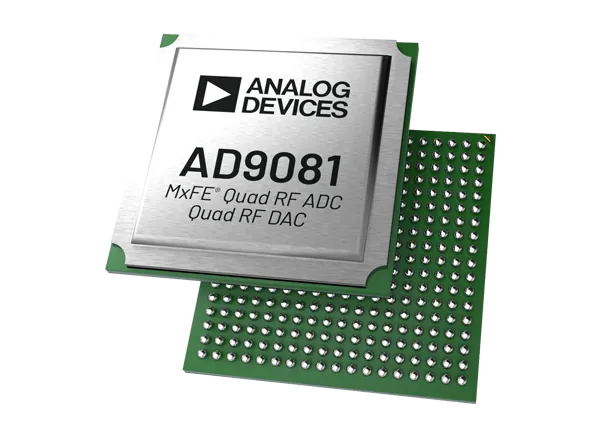

AD9081 & AD9082
{kind=link}

Overview
The EVAL-AD9081 is an FMC radio card for the AD9081, mixed signal front end (MxFE®), highly integrated device with four 16-bit, 12 GSPS maximum sample rate, RF DAC cores, and four 12-bit, 4 GSPS rate, RF ADC cores. The AD9081 model is 4D4AC, supporting 4 DACs and 4 ADCs.
The AD9081 / AD9082 are well suited for applications requiring both wideband ADCs and DACs to process signal(s) that have wide instantaneous bandwidth. The device features 8 transmit and 8 receive lanes that support 24.75 Gbps/lane JESD204C or 15.5 Gbps/lane JESD204B standards. The device also has an on-chip clock multiplier, and a digital signal processing (DSP) capability targeted at either wideband or multiband direct to RF applications.
The EVAL-AD9082 is an FMC radio card for the AD9082, mixed signal front-end (MxFE®) is a highly integrated device with a 16-bit, 12 GSPS maximum sample rate, RF DAC core, and 12-bit, 6 GSPS maximum sample rate, RF ADC cores. The AD9082 model is 4D2AC, supporting 4 DACs and 2 ADCs, and 2D2AC model supporting 2 DACs and 2 ADCs.
Features:
Fast frequency hopping
Direct digital synthesis (DDS)
Loopback modes
Digital up/down converters (DUC/DDC)
Programmable filters and gain control
JESD204B/C interface (up to 24.75 Gbps)
Multichip synchronization
TDD power savings
Applications:
Wireless communications infrastructure
Microwave point-to-point, E-band and 5G mmWave
Broadband communications systems
DOCSIS 3.1 and 4.0 CMTS
Phased array radar and electronic warfare
Electronic test and measurement systems
EVAL-AD9081 looks like this, with 4x ADCs and 4x DACs:

While EVAL-AD9082 looks like this, with 2x ADCs and 4x DACs:

Recommendations
People who follow the flow that is outlined, have a much better experience with things. However, like many things, documentation is never as complete as it should be. If you have any questions, feel free to ask on our EngineerZone forums, but before that, please make sure you read our documentation thoroughly.
To better understand the AD9081 / AD9082, we recommend to use the EVAL-AD9081 / EVAL-AD9082 evaluation board.
Table of contents
Using the evaluation board/full stack reference design that we offer:
User guide - what you need to know about the evaluation board
Prerequisites - what you need to get started with the setup
-
Using the Arria 10 SX SoC
Using the VCK190 & VPK180/Versal
Using the VCU118/ Virtex UltraScale+
Using the ZC706/ Zynq-7000 SoC
Using the ZCU102/Zynq UltraScale+ MP SoC
Configure an SD Card with Kuiper
Linux Applications
Design with the AD9081/AD9082
Hardware in the Loop / How to design your own custom BaseBand
Resources for designing a custom AD9081/AD9082-based platform software
For Linux software:
About the device driver:
About the device tree:
About the JESD204 utilities:
HDL reference design which you must use in your FPGA.
Evaluating the AD9081/AD9082/AD9986/AD9988 Mixed Signal, Front-End RF Transceiver with ACE software
Additional documentation about SDR Signal Chains - The math behind the RF
Block diagram


Videos
ADI articles
About JESD standard:
Warning
All the products described on this page include ESD (electrostatic discharge) sensitive devices. Electrostatic charges as high as 4000V readily accumulate on the human body or test equipment and can discharge without detection. Although the boards feature ESD protection circuitry, permanent damage may occur on devices subjected to high-energy electrostatic discharges. Therefore, proper ESD precautions are recommended to avoid performance degradation or loss of functionality. This includes removing static charge on external equipment, cables, or antennas before connecting to the device.